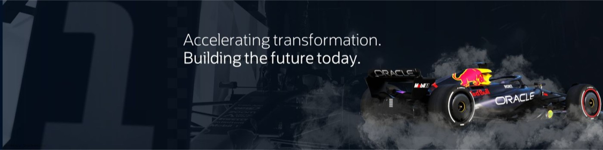

Oracle Latin America · Communication Specialist
Maria
Fernanda
Roncancio
Storyteller · Authenticity Advocate · Tech, AI & Cloud · Strategic Communication
Especialista en comunicación para Oracle Latinoamérica con experiencia en PR, comunicación interna, posicionamiento ejecutivo y storytelling estratégico. Combina creatividad, estrategia y autenticidad para conectar personas, tecnología y cultura en entornos regionales de alto impacto.

Communication Specialist Oracle LATAM
Bogotá, Colombia
Business administrator passionate about communication, innovation, storytelling and human-centered strategy.
PR
Executive Positioning
Storytelling
Internal Communication
AI & Tech
Brand Strategy